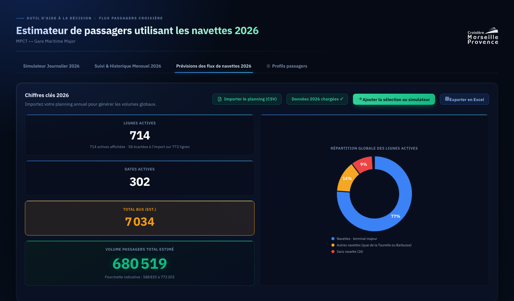

Soutenance · version publique · 2026
Rapport de stage
et mémoire.
Stage au sein de Marseille Provence Croisière.
PRÉSENTÉ PARKarl Kiwan
ÉTABLISSEMENTUniversité de Toulon
MARSEILLE PROVENCE CROISIÈRE
KARL KIWAN
KARL KIWAN
01 · STRUCTURE D’ACCUEIL MPC
Marseille Provence Croisière
MPC relie l’activité portuaire au territoire.
Association créée en 1996, MPC fédère les acteurs de la croisière maritime et fluviale en Provence.
1996 MPC est une association loi 1901 créée pour coordonner et développer la filière croisière à Marseille.
ACTIVITÉ PORTUAIRECompagnies · GPMM · MPCT
MPC
TERRITOIRECollectivités · tourisme · transports · commerces
01 Environnement02 Accueil touristique03 Développement et suivi du marché
Source : rapport, pages 4 à 7.
02 · MISSIONS & TRAVAUX VUE D’ENSEMBLE
Trois problèmes concrets
Mesurer la fréquentation fluviale, anticiper les navettes et accélérer le traitement des manifestes.
Pour chaque mission, j’ai défini la donnée d’entrée, le traitement, le contrôle et le résultat remis à l’équipe.
02 · MISSIONS & TRAVAUX MISSION 01 · PROBLÈME
Mission 01 · Rhône–Saône
Sans manifestes, MPC ne pouvait pas connaître la fréquentation réelle des escales.
L’extraction Gescales indiquait le navire, le port et les dates, mais pas le nombre de passagers ni la nature réelle de l’opération.
DONNÉE MANQUANTEFréquentation réelleImpossible de distinguer directement les opérations de tête de ligne des escales de transit.
EXTRACTION GESCALES2025–2026
NAVIREPORTDATEPASSAGERS
Viking HeimdalAvignon12/04/2026—
Viking HeimdalArles13/04/2026—
Viking HeimdalAvignon14/04/2026—
28navires
3 133lignes en 2026
3 038lignes en 2025
02 · MISSIONS & TRAVAUX MISSION 01 · MÉTHODE & RÉSULTATS
Des données brutes à une estimation reproductible
Six étapes permettent de reconstruire les itinéraires et d’estimer les passagers.
RÈGLE ACTIVE
Référentiel des 28 navires : capacité, compagnie, segment et ports de tête de ligne.
Limite Le taux moyen de 90 % est une hypothèse documentée ; il ne remplace pas un comptage par départ.
Source : rapport, pages 9 à 17.
02 · MISSIONS & TRAVAUX MISSION 02 · TERRAIN
DOUBLE COMPTAGE TERRAINRelevé anonymisé
ÉTAPEOBS. AOBS. BCONTRÔLE
Sortiesrelevérelevémoyenne
Retoursrelevérelevémoyenne
Deux observations simultanées · consolidation après vérification
OBSERVATEURA
ÉCART < 0,5 %
OBSERVATEURB
RÉSULTAT RETENUMOYENNE après contrôle
Mission 02 · Avril à juin 2026
Comment anticiper l’utilisation des navettes payantes ?
Terminaux du môle Léon Gourret ↔ Gare Maritime Major
10journées observées
−1journée écartée
=9observations exploitables
CHOIX DE MÉTHODE Le comptage physique a été retenu pour mesurer directement les flux, avec un double comptage quand cela était possible.
02 · MISSIONS & TRAVAUX MISSION 02 · MODÈLE
Régression linéaire sans constante · n = 9
Le modèle fournit un ordre de grandeur par segment, à lire avec son incertitude.
PASSAGERS UTILISANT LES NAVETTES · ESTIMATION=0,3069 × PAX MASS MARKET+0,5246 × PAX PREMIUM+0,4286 × PAX LUXE
Chaque coefficient relie le nombre de passagers en transit à l’usage estimé des navettes pour un segment.
LECTURE Pour 1 000 passagers mass market, le modèle estime environ 307 utilisateurs.
ÉCHANTILLON9observations
R² CENTRÉ88,1 %sur l’échantillon · pas un taux de précision
RMSE SUR L’ÉCHANTILLON≈ 439passagers
RMSE EN VALIDATION PAR RETRAIT SUCCESSIF≈ 678passagers
PRUDENCE Avec neuf observations, le modèle fournit un ordre de grandeur ; il ne permet pas d’expliquer précisément chaque comportement individuel.
02 · MISSIONS & TRAVAUX MISSION 02 · ESTIMATEUR
Estimateur de navettes · aperçu public
Mission 2 — Transformer le modèle en estimateur opérationnel
L’interface HTML et JavaScript permet à l’équipe d’exploiter le modèle sans ouvrir R.
772 lignes du planning308 dates couvertes
Après filtrage : 714 lignes actives réparties sur 302 dates.
01Sélectionnerune date et un navire
02Estimerla demande par segment
03Dimensionnerune fourchette et des rotations
DIFFUSION MAÎTRISÉE Cet aperçu est statique. L’application opérationnelle et le planning source restent réservés au cadre d’évaluation.
TABLEAU DE BORD · SYNTHÈSE 2026APERÇU PUBLIC

02 · MISSIONS & TRAVAUX MISSION 03 · AUTOMATISATION
Automatisation supervisée · manifestes passagers
Mission 3 — Automatiser le traitement des manifestes
L’extraction est accélérée, mais la consolidation reste soumise à une validation humaine.
ÉTAPE 01 · MANIFESTES
Réception de manifestes dont la mise en page varie selon les compagnies.
AVANT≈ 1 semainetraitement manuel
APRÈS1,5 à 2 joursjusqu’à 2,5 jours si le volume augmente
03 · BILAN DU STAGE APPORTS & COMPÉTENCES
Bilan du stage
J’ai structuré les données, construit le modèle, automatisé la consolidation et contrôlé les résultats.
CollecterStructurerModéliserContrôlerRestituer
- Méthode de suivi de la fréquentation fluviale
- Modèle d’estimation des navettes
- Application réutilisable
- Automatisation supervisée des manifestes et réduction du temps de traitement
- Repérage des journées à forte demande de navettes
- Excel et structuration de données
- R et statistiques
- Python, IA et automatisation
- HTML et JavaScript
- Compréhension du secteur, autonomie et échanges professionnels
Un résultat utile doit être traçable, réutilisable et compréhensible par l’équipe.
04 · MÉMOIRE PROBLÉMATIQUE
Croisière et transition environnementale à Marseille
Dans quelle mesure la transition environnementale de la filière croisière peut-elle permettre de concilier le développement de l’activité et son acceptabilité territoriale à Marseille ?
Valeur économiqueExternalitésTransitionLimitesConditions de conciliation
Problématique du mémoire · page 36.
04 · MÉMOIRE ÉCONOMIE
Pourquoi la croisière compte-t-elle pour Marseille ?
Les retombées viennent des dépenses en hébergement, restauration, commerces, transports et excursions.
FRÉQUENTATION 2025≈ 2,6 Mcroisiéristes accueillis
Estimation 2015 : un passager en transit dépense en moyenne environ 50 euros à terre.
HôtellerieRestaurationCommercesTransportsExcursionsActivités maritimes
Sources : Marseille Provence Croisière, 2026 ; Cour des comptes, 2017, d’après Club de la Croisière Marseille Provence, 2015 ; CCI Marseille Provence, 2016.
04 · MÉMOIRE EXTERNALITÉS
Une répartition territoriale inégale
Les retombées peuvent se diffuser ; certaines nuisances sont davantage localisées près du port et des axes de circulation.
Marseille · métropole · région
HôtelsCommercesExcursions
PORT
Quartiers portuaires et axes de circulation
Pollution de l’airBruitCirculationFlux de visiteurs
54 %
des émissions communales de NOx en 2021 étaient liées au trafic maritime.
NOx = oxydes d’azoteToutes activités maritimes confondues — pas seulement la croisière.ACCEPTABILITÉ TERRITORIALEElle dépend notamment de la manière dont les bénéfices et les nuisances de l’activité sont perçus et répartis sur le territoire.
Source : AtmoSud, 2025a · donnée 2021.
04 · MÉMOIRE RÉPONSES ENVIRONNEMENTALES
Trois niveaux d’action
La réglementation, le port et la flotte évoluent en même temps.
- EU ETS
- coût du carbone · tarification des émissions
- FuelEU Maritime
- réduction progressive de l’intensité en gaz à effet de serre de l’énergie utilisée
- SECA Méditerranée
- limite renforcée sur la teneur en soufre des combustibles
EFFET ATTENDURéduire les émissions couvertes par des règles plus strictes.
POINT DOCUMENTÉEU ETS, FuelEU Maritime et SECA Méditerranée.
LIMITE / PÉRIMÈTRESECA Méditerranée : renforcer la limite de soufre des combustibles.
CENAQ> 200 M€ensemble du programme · jusqu’à 3 grands navires raccordés simultanément
SANS ÉLECTRIFICATION−3,75 %AVEC 60 % DU TEMPS D’ESCALE ÉLECTRIFIÉ−33,5 %
Scénarios NOx croisière 2025 par rapport à 2022 — pas des résultats mesurés.
LIMITE CENAQ agit lorsque le navire est raccordé à quai ; il ne supprime pas les émissions de navigation ni de manœuvre.
Sources : Grand Port Maritime de Marseille, 2026 et s. d. ; Pôle Mer Méditerranée / Citepa, 2024.
04 · MÉMOIRE LIMITES TECHNOLOGIQUES
QUALITÉ DE L’AIR ≠ BÉNÉFICE CLIMATIQUE
GNL (gaz naturel liquéfié) : qualité de l’air et climat, deux bilans différents.
Plus haut = davantage de CO₂eGNLGazole marin
10–12 %
25 %
54 %
75 %
80 %
Methane slip
méthane non brûlé rejeté dans l’atmosphère par le moteur
À faible charge moteur, il peut réduire voire annuler l’avantage climatique du GNL.Sur le navire étudié et par rapport au gazole marin : −87 à −93 % de masse de particules et −94 à −99 % de carbone noir.
Une technologie peut améliorer fortement la qualité de l’air sans constituer une solution complète de décarbonation.
Source : Kuittinen et al., 2024.
04 · MÉMOIRE RÉPONSE
Peut-on concilier développement et acceptabilité ?
OUI, MAIS SOUS CONDITIONS.
La transition environnementale peut améliorer les conditions permettant de concilier le développement de la croisière et son acceptabilité territoriale à Marseille, sans garantir à elle seule cette acceptabilité.
Les équipements et technologies doivent réellement être utilisés.
LIMITE MÉTHODOLOGIQUEL’acceptabilité des habitants n’a pas été mesurée directement ; le mémoire identifie les conditions susceptibles de l’améliorer.
OUVERTURELes prochaines années permettront d’évaluer si Marseille parvient à décorréler le développement de la croisière de l’augmentation de ses impacts.
Merci pour votre attention.